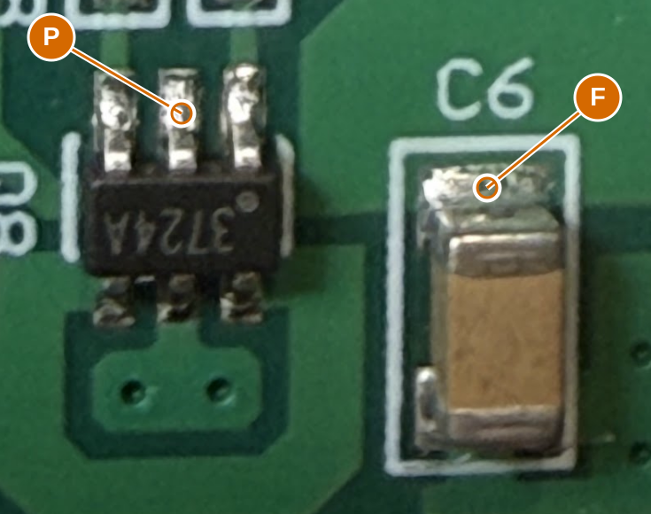

Disconnect battery and programmer. Use resistance mode (ohms), not diode mode. First touch the probe tips together and record their resistance; then measure P-F. Keep contact steady and report whether the reading settles or changes.
Leave Q3 and all other components fitted. P is the centre of Q8's three upper solder contacts in this photo; F is C6's upper metal end. Probe the exposed metal, not the package body or solder mask.
Q8 supply path: centre pad P to C6 upper end F

P: Q8 top-centre solder contact in this photo (physical T2 / candidate package pin 2). Not either neighbouring gate pad.
F: Upper metal end of C6, on the C5-positive supply side in this photo. Not C6 lower/GND end.
ID
Red probe
Black probe
Reading
B37
P
F
If P-F is steady and indistinguishable from the shorted-probe baseline, it supports a direct source-supply net. A reproducible extra resistance such as 10 ohms leaves the path unresolved; no resistor or wire will be invented from it. OL rejects the proposed direct join. This does not verify MOSFET identity, rail voltage or switching behavior.
Copy results
Worksheet only; nothing is sent automatically. Copy before closing.
What follows
Resolve hidden paths and device behavior - Q3 stays fitted; isolated identification is deferred. Next: Q8 supply-path resistance with a shorted-probe baseline. Three local-only PIC branches and antenna continuations remain; other checks are staged.
Recover critical component values - 44 ceramic values; prioritize tuning and receiver after topology.
Finish interface and package mapping - LED channel/pad map and footprint; motor wire order. Exact physical fit is a later PCB qualification.
ERC: 1 retained U6/U6A output conflict. U6A is DNP; its regulator symbol remains by your request. Other source and library findings are resolved.